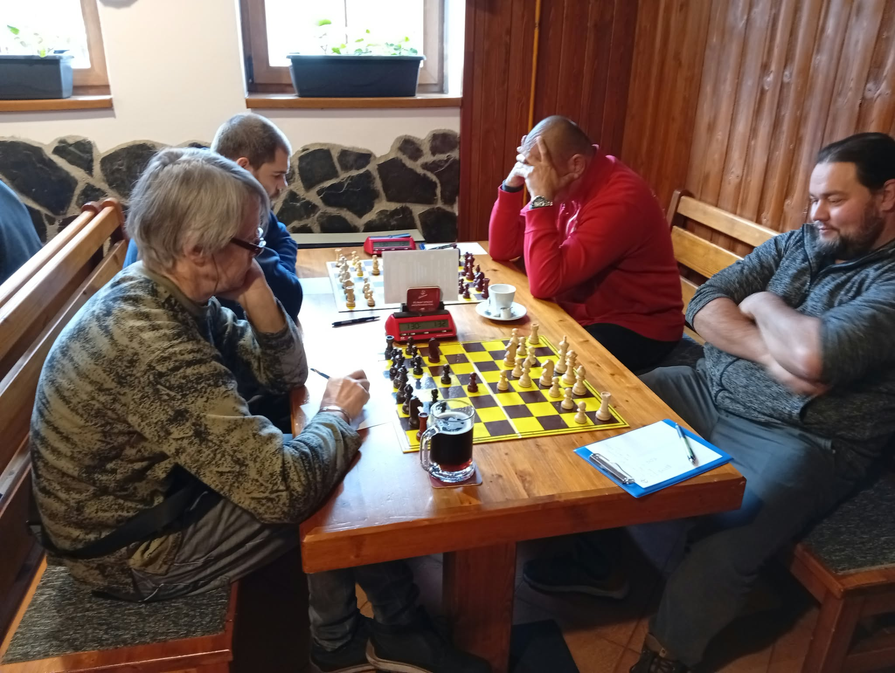
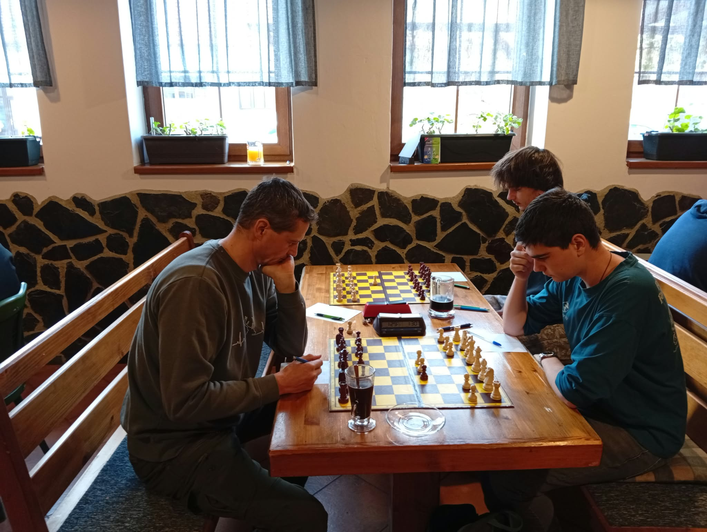
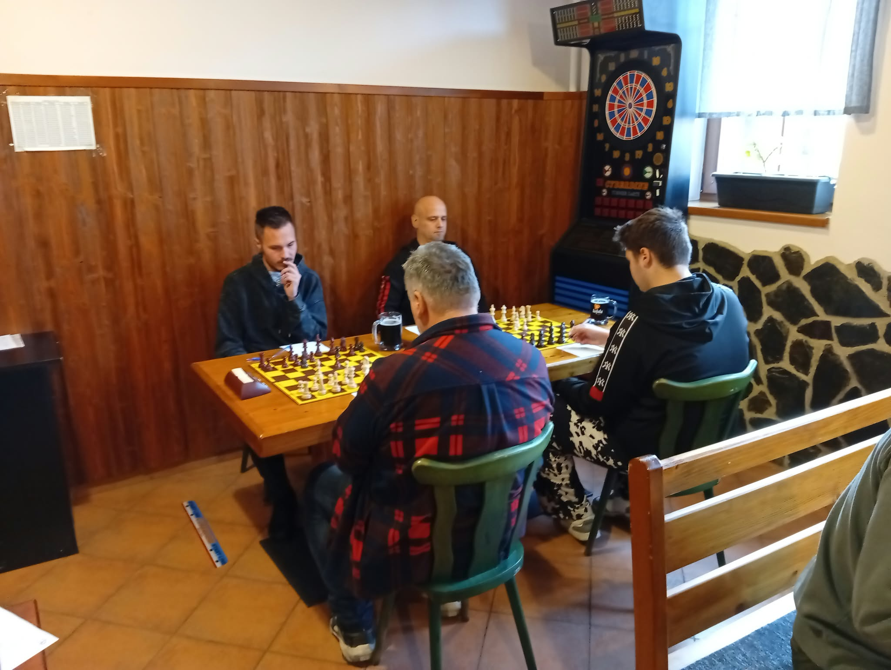
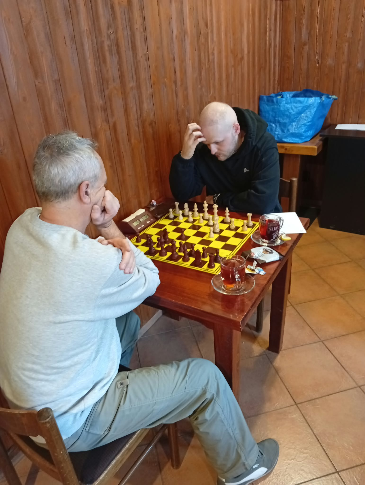
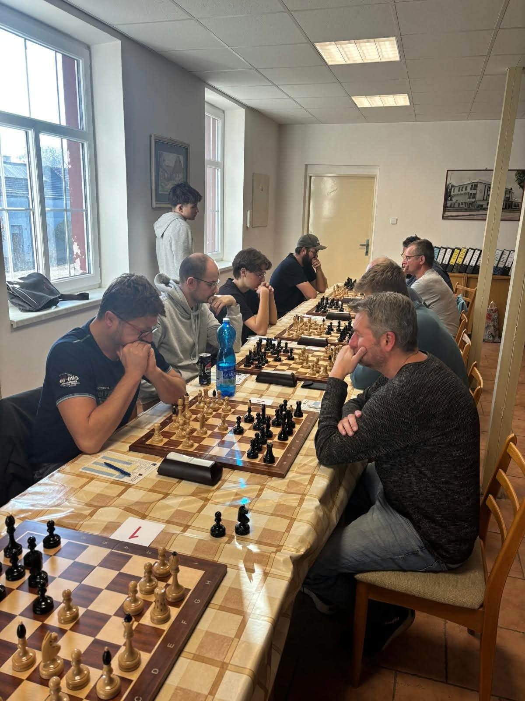
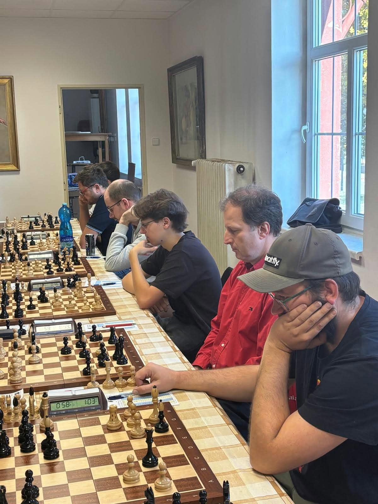
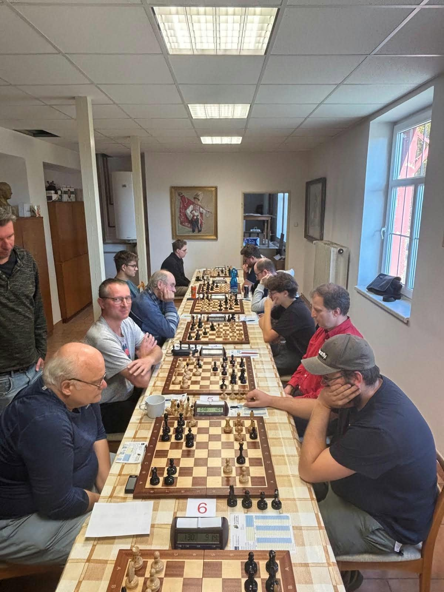
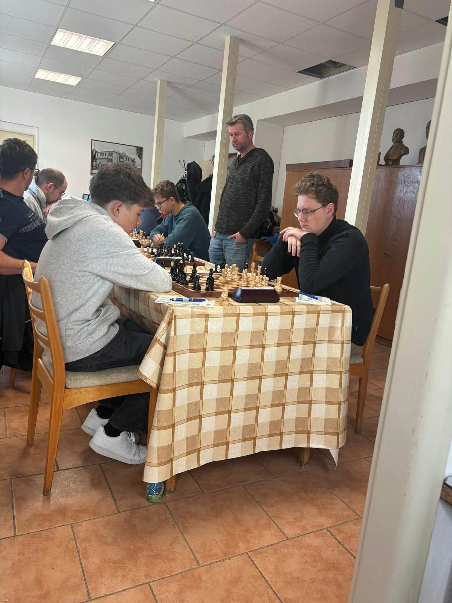

7. listopadu nás čekalo 2. kolo okresního přeboru. Áčko hrálo opět doma – tentokrát proti Vacenovicím, a béčko zase venku – tentokrát jelo do Kyjova, což byl soupeř áčka z prvního kola.
Utkání se dají shrnout slovy „všechno špatně“. Alespoň tedy za áčko... Skóre mluví samo za sebe. Co je ale horší než prohra, je to, jak k ní došlo. S výjimkou Mariána, který si v klidu došel pro remízu na 5. šachovnici, jsme se nikdo nevyvaroval zbytečných chyb a postupně jsme všechny partie dovedli do prohry. Včetně těch, kde jsme stáli lépe nebo minimálně na remízu.
DB - Vacenovice, 1. šachovnice, Lacina (1430) - Londin Martin (1930), 0-1
DB - Vacenovice, 2. šachovnice, Neduchal (1808) - Padalík (----), 1-0
DB - Vacenovice, 3. šachovnice, Krátký (1588) - Londin Michal (1590), 0-1
DB - Vacenovice, 4. šachovnice, Ňorek David (1343) - Vraňan (1523), 1-0
DB - Vacenovice, 5. šachovnice, Bohun (1365) - Chrbolka T. (1339), 0,5-0,5
DB - Vacenovice, 6. šachovnice, Chrbolka J. (1439) - Červenka (----), 1-0
DB - Vacenovice, 7. šachovnice, Kaňa (----) - Blaha (1414), 0-1
Kyjov - DB, 1. šachovnice, Brídl (1508) - Kubík (1488), 1-0
Kyjov - DB, 2. šachovnice, Budovič (1440) - Sláma (1572), 0-1
Kyjov - DB, 3. šachovnice, Vaněk (1530) - Blažek (----), 1-0
Kyjov - DB, 4. šachovnice, Šťastný (----) - Hejda (1740), 0-1
Kyjov - DB, 5. šachovnice, Machala (1704) - Múčka (1566), 0,5-0,5
Kyjov - DB, 6. šachovnice, Pištěk (----) - Jurutka (1417), 0-1
Kyjov - DB, 7. šachovnice, Vaškových (----) - Svoboda (----), 1-0







